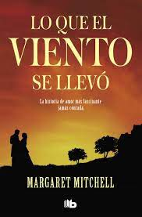

Sinopsis

Scarlett O'Hara vive en Tara, una gran plantación del estado sureño de Georgia, y está enamorada de Ashley Wilkes, que en breve contraerá matrimonio con Melanie Hamilton. Estamos en 1861, en los prolegómenos de la guerra de Secesión, y todos los jóvenes sureños muestran entusiasmo por entrar en combate, excepto el atractivo aventurero Rhett Butler.
A Butler le gusta Scarlett, pero esta sigue enamorada de Ashley, que acaba de hacer público su compromiso con Melanie. Despechada, Scarlett acepta la propuesta de matrimonio de Charles, el hermano de Melanie, al que desprecia.
Años más tardes, y como consecuencia del final de la guerra, ya viuda, Scarlett debe afrontar situaciones nuevas como el hambre, el dolor y la perdida e instalarse en Atlanta, donde Melanie espera noticias y de Ashley y Butler aparece de nuevo...
Sobre el Autor

(Atlanta, 1900 - 1949) Novelista norteamericana. Alcanzó fama mundial con su obra Lo que el viento se llevó (1936), que se convirtió en uno de los primeros best sellers del siglo XX, ya que vendió más de ocho millones de ejemplares. La obra amplificó aún más su audiencia al convertirse en un clásico internacional a través de su versión cinematográfica.
Cuando se proyectó el film se vio obligada a aparecer en público, puesto que más de una impostora la había suplantado. Contaba cuarenta y nueve años cuando fue atropellada por un camión al atravesar con su marido una calle de Atlanta; cinco días después dejaba de existir. Era una mujercita de ojos azules, simpática y modesta, que solía decir: "Sé lo que es trabajar bien y entiendo de libros: el mío no me parece bueno". El éxito fabuloso de Lo que el viento se llevó (cerca de cuatro millones de ejemplares vendidos en los Estados Unidos en quince años), le impidió escribir otra obra; aparte de su afortunada novela, sólo dejó algunos artículos periodísticos.